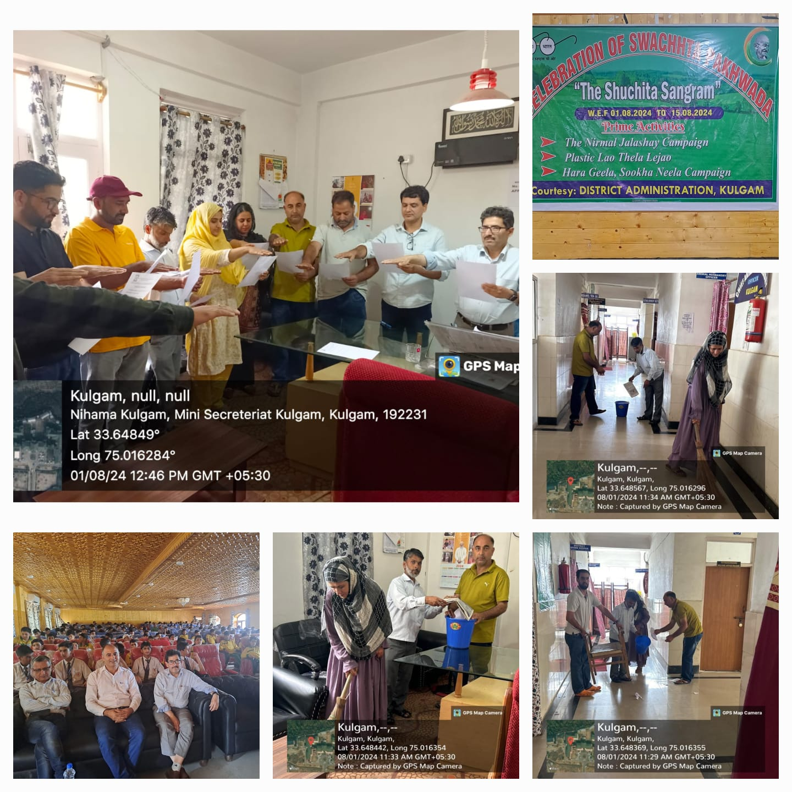
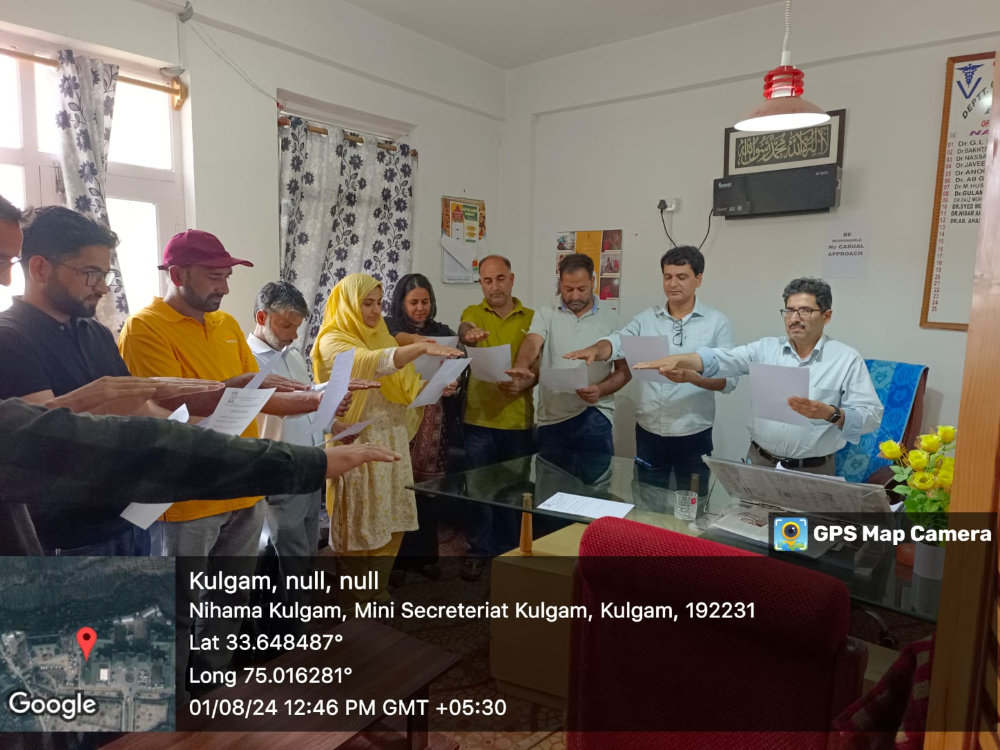
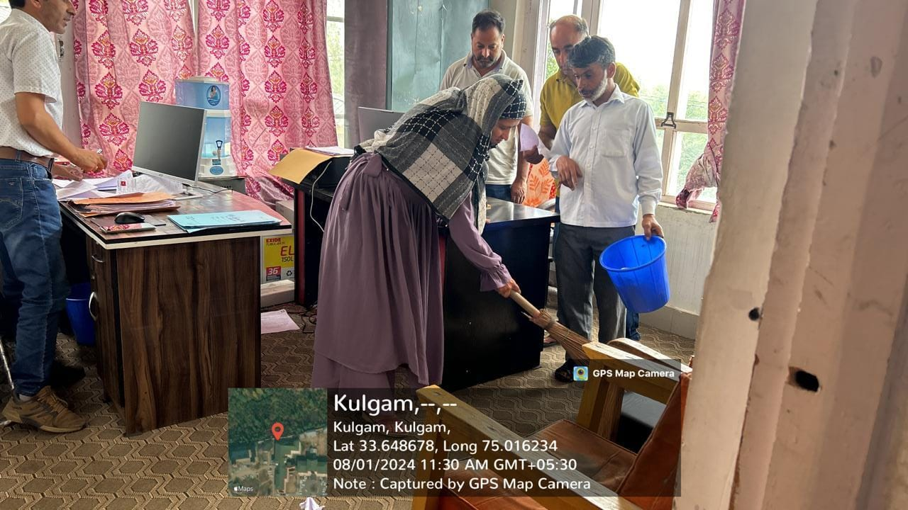
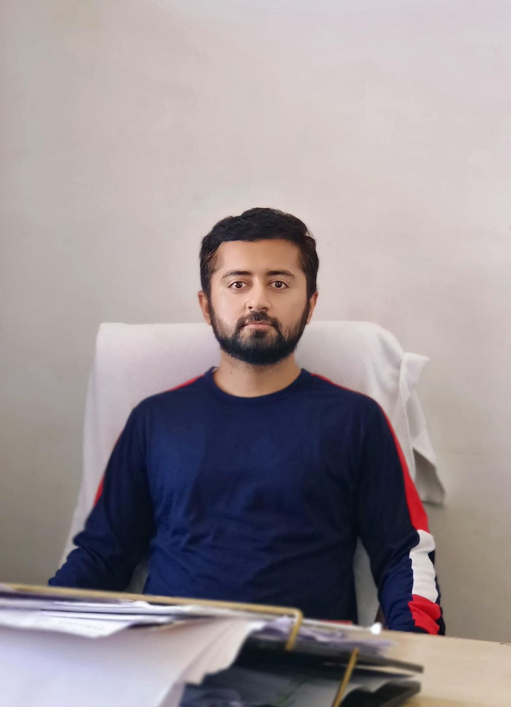

Activities
Director's visit to Chief Animal Husbandry Officer Kulgam
Cryocanes (BA-7) distribution (MAITRI's)
Tab distribution (MAITRI's)
SWACHATA PAKHWADA
Fortnightly campaign of cleanliness starting from 1st August 2024 to 15th August 2024



Designed and Developed by

Shubhdeep Singh
forevershubhdeep@gmail.com